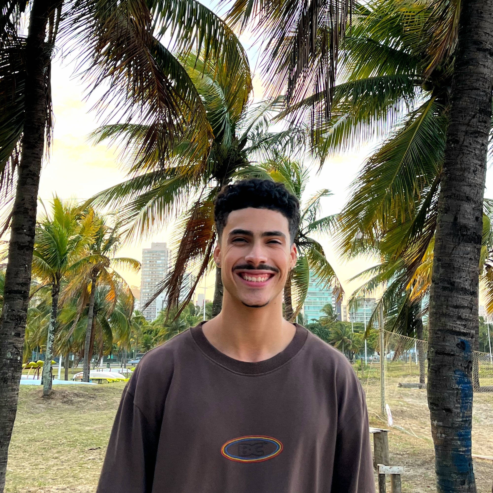

Bem-vindo!
Sou o Daniel Caldas, um Desenvolvedor Web em Crescimento, apaixonado por aprender e me desenvolver continuamente na área de tecnologia. Na minha jornada no desenvolvimento web, procuro sempre expandir minhas habilidades. Meu objetivo é criar soluções que não apenas atendem, mas superam as expectativas de usuários e clientes.

Habilidades e Aptidões
- Desenvolvimento Front-end (HTML, CSS, JavaScript).
- Desenvolvimento Back-end (Node.js).
- Criação de sites responsivos e dinâmicos.
- Integração com APIs RESTful.
Hobbies e Interesses
Além de desenvolver sites, também gosto de:
- Escutar música e tocar violão.
- Praticar esportes.
- No âmbito futebol, torço para o Cruzeiro Esporte Clube de Minas Gerais.
- Jogos de Estratégia e Puzzles.
- Explorar novas tecnologias e ferramentas de programação.
Histórico Acadêmico
| Instituição |
Curso |
Período |
| UVV - Universidade Vila Velha |
Bacharelado em Sistemas de Informação |
2024 - presente |
| IFES - Campus Cariacica |
Ensino Médio |
2015 - 2018 |
| EEEFM Ary Parreiras |
Ensino Fundamental |
2011 - 2014 |
Planos Futuros
Planejo me especializar em desenvolvimento full-stack e contribuir em grandes projetos que façam a diferença no mercado de tecnologia.
Participação em Eventos
- Palestra: "O Futuro do Desenvolvimento Web" - Conferência Tech 2023
- Workshop: "Desenvolvimento Ágil com React.js" - Startup Hub 2022
- Trabalho Acadêmico: "Segurança de APIs" - Apresentação na Semana de Tecnologia 2023
Disciplinas Cursadas Atualmente
- Construção de Software para Web
- Design e Desenvolvimento de Banco de Dados I
- Experiência e Interface com o Usuário
- Fundamentos de Tecnologia da Computação
- Lógica para Computação
- Textos Científicos: Aspectos Metodológicos e Linguísticos